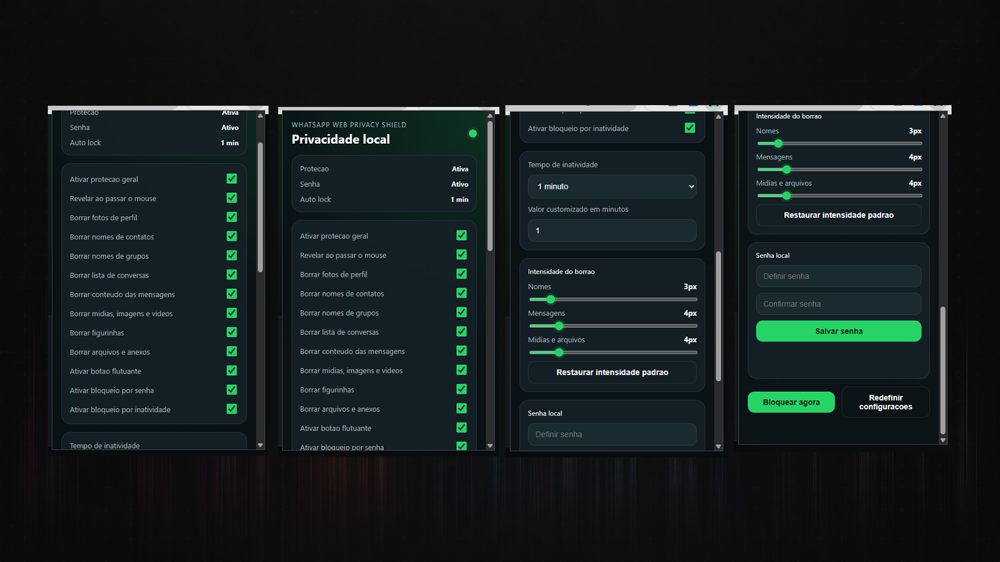
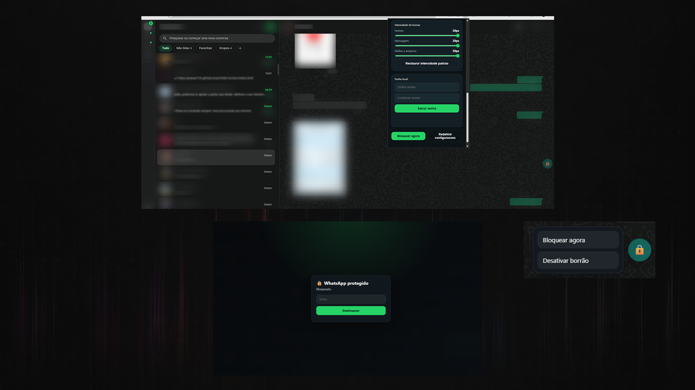
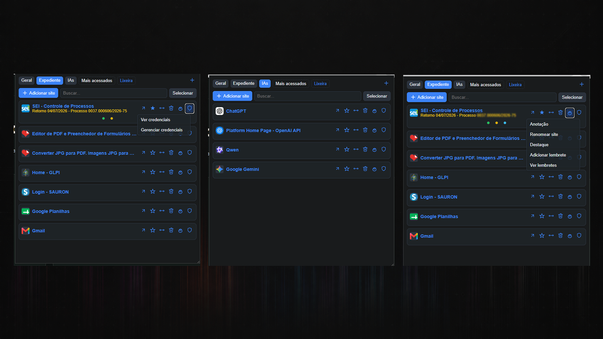
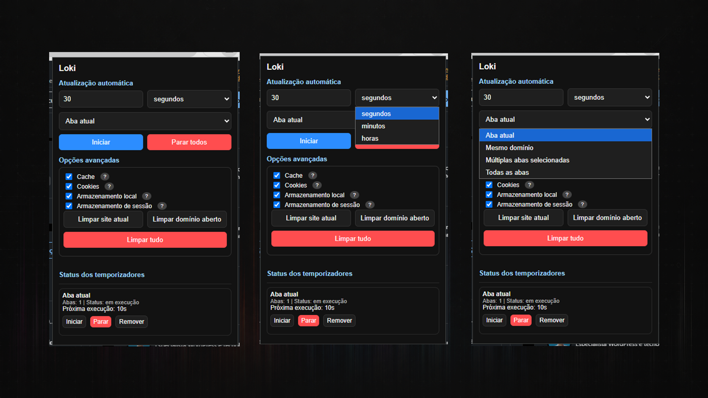
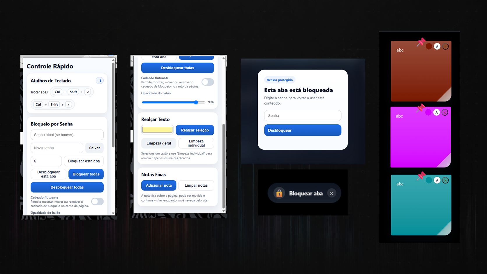

Desenvolvimento de Sistemas
Extensões de Navegador
Coleção de extensões Chrome com foco em privacidade visual, produtividade local e organização da navegação.
Visão Geral
Este projeto demonstra a construção de extensões de navegador voltadas a problemas concretos de uso diário, como proteção visual de interfaces, organização de fluxo e ganho de produtividade local sem dependência de backend.
Desafio Técnico
Interfaces web frequentemente expõem informações em tela, acumulam excesso de abas e carecem de controles simples para ajustes locais de uso. O desafio era criar soluções leves, reaproveitáveis e instaláveis diretamente no navegador.
Solução Desenvolvida
Foi estruturado um conjunto de extensões independentes com popup, scripts de conteúdo, service workers e persistência local. A frente mais representativa utiliza blur seletivo, bloqueio local e preferências salvas para proteger a visualização sem alterar o serviço original.
Arquitetura / Fluxo
Ilustrações Técnicas
Registros visuais, diagramas ou representações técnicas utilizados para contextualizar a arquitetura, o fluxo e os resultados do projeto.





Entregas Técnicas
- Blur seletivo de elementos sensíveis.
- Persistência local de configurações.
- Menus e ações rápidas embutidas na página.
- Estrutura modular para múltiplas extensões.
- Recursos de organização de abas e favoritos.
Competências Demonstradas
- Desenvolvimento de extensões Chrome em Manifest V3.
- Manipulação de DOM em páginas de terceiros.
- Modelagem de estado local no cliente.
- UX aplicada a privacidade e produtividade.
- Organização modular de frontend.
Resultado Técnico
O conjunto comprova capacidade de construir extensões de navegador úteis, modulares e alinhadas a problemas reais de privacidade visual e produtividade local.